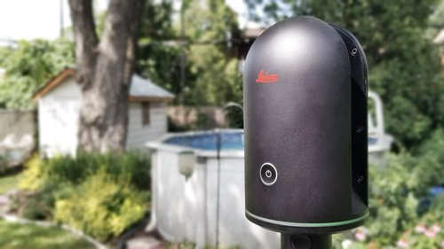

Numérisation laser 3D
« Le relevé par numérisation laser 3D est bien plus qu’un simple relevé. »

Les avantages
+
Informations détaillées
Lors du balayage laser, tous les éléments présents dans l’espace sont captés en même temps, incluant les éléments architecturaux, l’éclairage, le mobilier et les matériaux de finition.
+
Grande précision
La prise de mesures est de haute précision et permet de relever des espaces et des équipements complexes. Les erreurs possibles pendant la prise de mesure manuelle sont aussi éliminées.
+
Visualisation 360°
Grâce à la photographie 360°, tous les membres de votre équipe peuvent visualiser les espaces, sans se déplacer sur le site.
+
Optimisations des ressources
Vous évitez de mobiliser les membres de votre équipe pour effectuer de longs relevés et de devoir retourner sur place pour recueillir des informations supplémentaires en cours de projet.
+
Outil de référence
Plus que des mesures, les données du relevé deviennent un outil de référence qui permet la consultation de l’information en tout temps, à chaque phase du projet, et qui facilite le partage des informations avec les intervenants externes.
+
Peu intrusif
Le procédé est simple, discret et sans contact. Il est donc très peu dérangeant pour les usagers des lieux et il n’est pas nécessaire de déplacer les équipements sensibles présents sur place.
Voici une excellente vidéo préparée par Leica expliquant les avantages de travailler avec les relevés par numérisation laser 3D.
(Sous-titre disponible en français dans les paramètres)
Notre équipement
Pour tous nos relevés, intérieurs et extérieurs, nous utilisons le scanneur
LEICA BLK360

Les applications
Le nuage de point permet d’obtenir toutes les dimensions nécessaires à la réalisation de projet tel que :
Rénovation
Agrandissement
Restauration de bâtiment
Changement de vocation
Intégration dans un contexte urbain

Les étapes
1 | Estimation
Basé sur les informations reçues (croquis, plans, photos), nous préparons une estimation spécifique à votre projet. Lorsque possible, nous effectuons une visite des lieux afin de clarifier les besoins.
2 | Relevé
Nous réalisons le balayage laser 3D à l’aide de notre équipement. Selon la dimension et la complexité de l’espace, la durée du relevé peut varier de quelques heures à quelques jours.
3 | Traitements des données
Nous procédons à l’agencement des différentes stations de relevé, à la réorientation, au nettoyage, au sectionnement par zone et à la réduction de la taille du fichier pour rendre les données facilement utilisables.
4 | Livraison des fichiers
Nous vous fournirons des fichiers de type Recap (.rcp) et des images jpeg 360°. Les fichiers de type Recap permettent une visite virtuelle des lieux.
5 | Intégration
Selon vos besoins
Nous pouvons intégrer le nuage de points dans un fichier Autodesk Revit.
6 | Modélisation
Selon vos besoins
Nous pouvons faire la modélisation dans le logiciel Autodesk Revit.